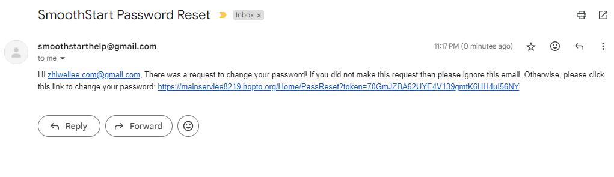
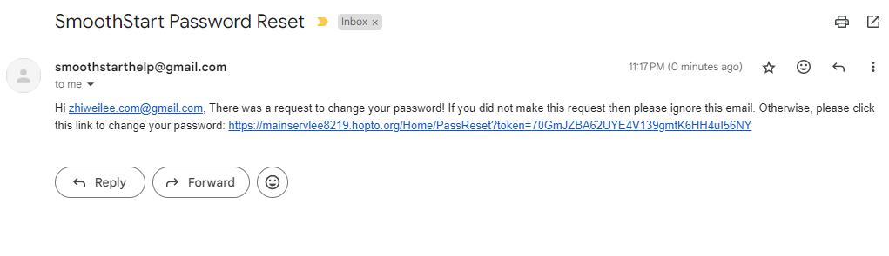
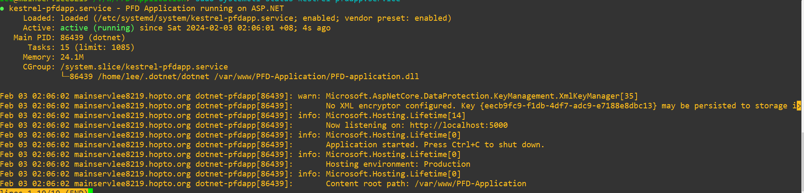
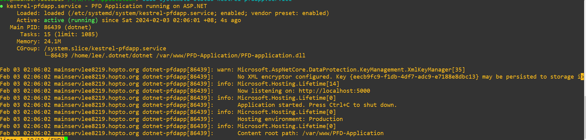

Week 15
Welcome to Week 15. I have successfully deployed the ASP.NET Administration application and PHP (API application) to my cloud instance, as well as my MySQL database, which is interfaced by both parts. In this case, I used my own Cloud Instance to deploy the apps onto, (since AIDC did not respond). The specification is shown as below.
- Single Core CPU
- 1GB RAM
- Ubuntu 20.04
- 25GB of Space
I used the following guides to help me,
ASP.NET NGINX setup,
NGINX and PHP,
lots of tinkering and this StackOverflow article.
Essentially the NGINX is acting as a router, and a backend with PHP at the same time.
When a HTTPS request is sent, it determine if it needs to be routed to the Reverse Proxy for ASP.NET.
For Example, when a request is sent to /Home/Main,
it determines that it matches the /* wildcard, and forwards it to ASP.NET.
While, for a request like /api/senddata.php,
it determines that it matches the /api/* wildcard, and internally handles it, letting PHP interpret it.
The first screenshot shows a test run of the application (running standalone), no systemd services yet, while testing the Reverse Proxy of NGINX.
The second screenshot shows the Database Security that we have implemented, in this case creating a new user dedicated to ASP.NET and only granting in certain
privileges such as SELECT, INSERT, UPDATE and DELETE only.
The next picture shows the Python code, setting my variable to point at my actual live web server, and setting sslpath to true,
background is that Python request has this parameter, Verify, which can either be a boolean, or a path to an SSL/TLS certificate,
I set it to True, is to use its internal certificate trusts to verify instead of an external certificate.
Next is showing that my server is fully up with HTTPS Certificate, fully trusted by an actual Certificate Authority.
The next 3 picture demonstrates the Password Reset Feature, showing how it can send emails, how it is able to generate a token,
and successfully resets the password.
Lastly, the picture shows the application is fully configured to run as a service, under systemd, and it is able to withstand crashes,
and will auto restart, using the command systemctl {command} kestrel-pfdapp.service, where {command} can be
status, start, stop, restart, enable, disable,
to show status of service, start it temporarily, stop it temporarily, restart the service, enable (persist through restarts and crashes), disable (reverse of enable) respectively.
Next week, I will be connecting my Tableau software to the MySQL database, for data visualisation. Thank you.

 


 
